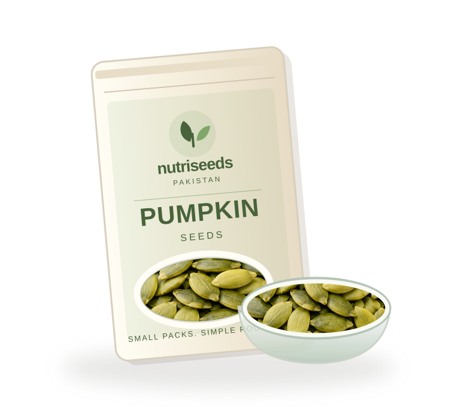

Everyday nourishment
starts somewhere.
NutriSeeds Pakistan is a university multimedia business concept designed around smaller seed packs, helpful information and a simpler customer journey.

BIG HEALTHMake it easy to begin.
We help Pakistani students, working people, and families explore edible seeds and seed-based foods by offering convenient product packs, a Discovery Box, simple usage guidance, and easy online ordering, so they can make informed choices without confusion.
Our approach brings everyday seed essentials together with transparent demonstration pricing and practical culinary ideas. We offer chia, flax, pumpkin, sunflower, and sesame seeds in regular 200g, 500g, and 1kg packs, alongside our 100g NutriSeeds Discovery Box, NutriMix blend, and planned cold-pressed sunflower cooking oil.
This is an academic prototype. All prices shown are researched demonstration estimates for academic evaluation. Delivery charges are strictly confirmed separately. Commercial registrations (including Punjab Food Authority) and commercial inventory are not represented as completed.
7 Key strengths
Convenient Pack Sizes
Practical 200g, 500g, and 1kg family packs, plus a 100g Discovery Box for beginners.
Market-Aligned Demo Pricing
Researched Lahore benchmarks for honest, realistic academic evaluation.
Flexible Order Requests
Quick, verified checkout requests directly via Formspree Email or WhatsApp.
Interactive Seed Finder
Match your favorite breakfast, baking, or topping routines with the right seed.
Everyday Food Recipes
Simple culinary inspiration and safe preparation methods for Pakistani households.
Future NutriGuide Vision
A planned independent dietitian consultation service (waitlist only, not active yet).
Complete Transparency
Demonstration prices, separate delivery confirmation, and zero medical or cure claims.
Good to know
Can I pay online?
No. This student website does not collect payment. The checkout demonstrates an order-request system rather than a completed commercial sale.
Can I buy 25g trial packets separately?
Individual seed varieties are sold in regular 200g, 500g, and 1kg packs. The 25g portions are exclusively available inside our curated NutriSeeds Discovery Box (containing four separate 25g packets of chia, flax, pumpkin, and sunflower seeds for Rs. 299) to provide a complete beginner tasting kit without single-packet shipping waste.
Are prices final?
No. Displayed prices are illustrative for the multimedia project and require real sourcing, packaging and delivery calculations before commercial launch.
Are the seeds certified or registered?
The concept does not claim current food registrations, laboratory certificates or verified suppliers. Those must be arranged before commercial sale, including any applicable Punjab Food Authority requirements.
How will delivery work?
Potential channels include couriers and local pickup/retail partnerships. There is no promised rate, delivery schedule or inventory in this prototype.
Is NutriGuide an active medical service?
No. It is a planned optional partnership with a qualified nutrition professional, not an operational service or medical diagnosis facility.
How do you store my information?
The cart remains in your browser. If a real form connection is configured, order and contact details are sent to the team's configured form processor and inbox for responding. Do not enter medical information in any form.